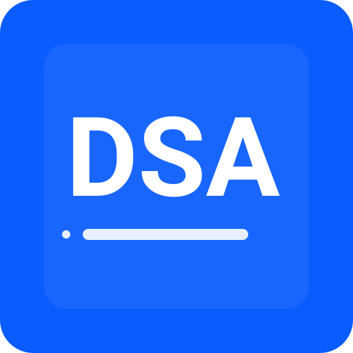

CapsLock+2 screenshot CapsLock+4 solve CapsLock+` stop
Enter Groq API keys. Each key handles one request, then the next key is used.
Get your API keys at: console.groq.com/keys
Keys rotate automatically: each key handles one request, then the next key is used.